Helping doctors and nurses avoid burnout with smarter clinical documentation.
- Timeline
- Apr 2024 – Oct 2025, 18 months
- Role
- UX Designer
- Team
- Oracle Health Design, clinical SMEs, product & engineering
- Skills
- User research, design for AI, enterprise UX, Figma
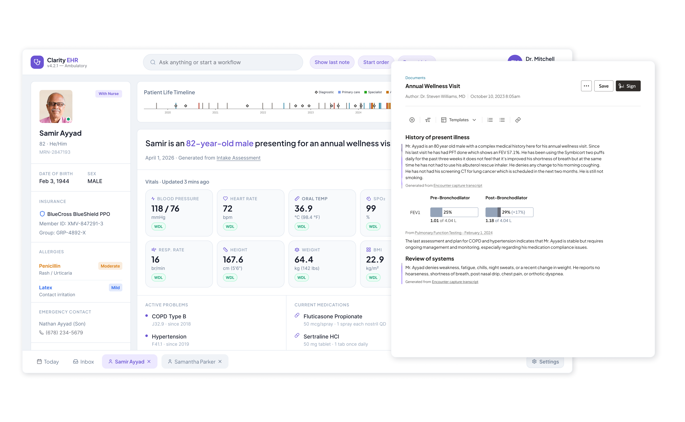
This project is under NDA. Screens shown here are anonymized with my own components.
The Problem
For every 8 hours doctors spend with patients, they spend 5 hours struggling through unusable EHR software to record long, bloated, redundant notes, a task significantly associated with physician burnout.
It's imperative that accurate and thorough healthcare records are kept, but currently the burden falls on physicians.
How might we make clinical notes a simple background task, and let clinicians focus on their patient?
The Solution
By empowering physicians with hands-off, automatic documentation, so all they need to do is make medical decisions and confirm the record.
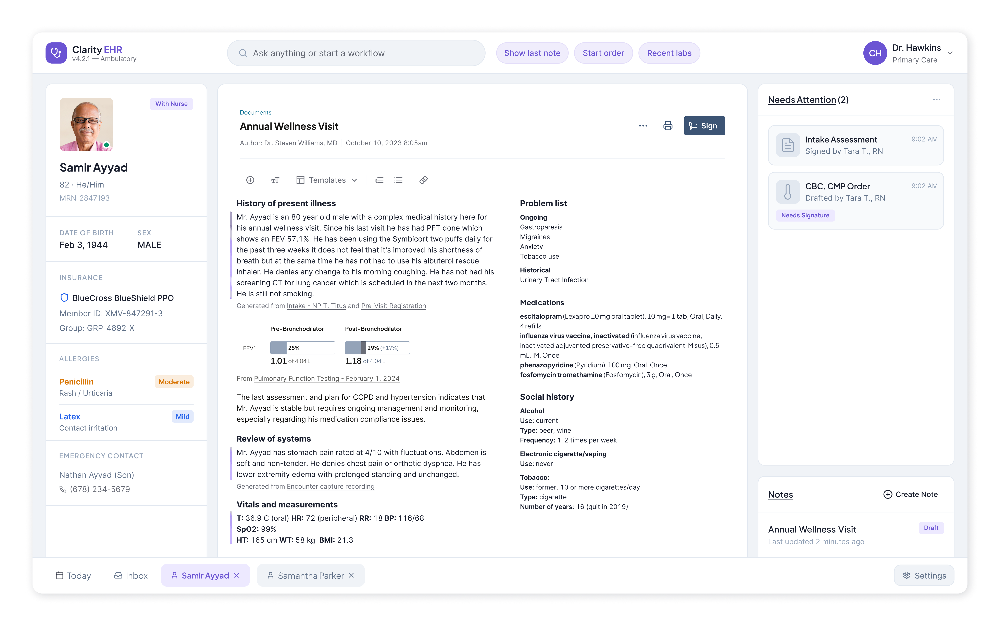
01Understanding the user
I worked closely with our physician subject matter experts (shoutout Dr. Wall) to understand how documentation impacts their work and their emotional state. To most physicians:
Documentation is an intrusion, a frustration, and a distraction from what physicians really care about: their patients.
It weaves its way into snatches of time wherever physicians can manage: glancing between their patient and the screen as they jot notes, dictating a few words in the hallway between visits, or in long hours tacked onto the end of a shift. Besides the practical difficulty of this task, doctors hate that they're forced to spend less face-to-face time with patients.
User goalAs a primary care physician, I need to document my patient's visit without disrupting my clinical workflow, so that I can focus fully on my patient and their treatment.
02Automation
Every minute saved writing is another minute of care and attention to their patient. So, let's first automate everything we can.
When a visit starts, we already have a wealth of information at our hands: the patient's medical history, the type of appointment they booked, the reason for visit, and tons of extra detail from their pre-visit registration forms, or gathered by the nurse during intake. Using this, we can:
Kickstart a templated note customized to this patient and this visit.
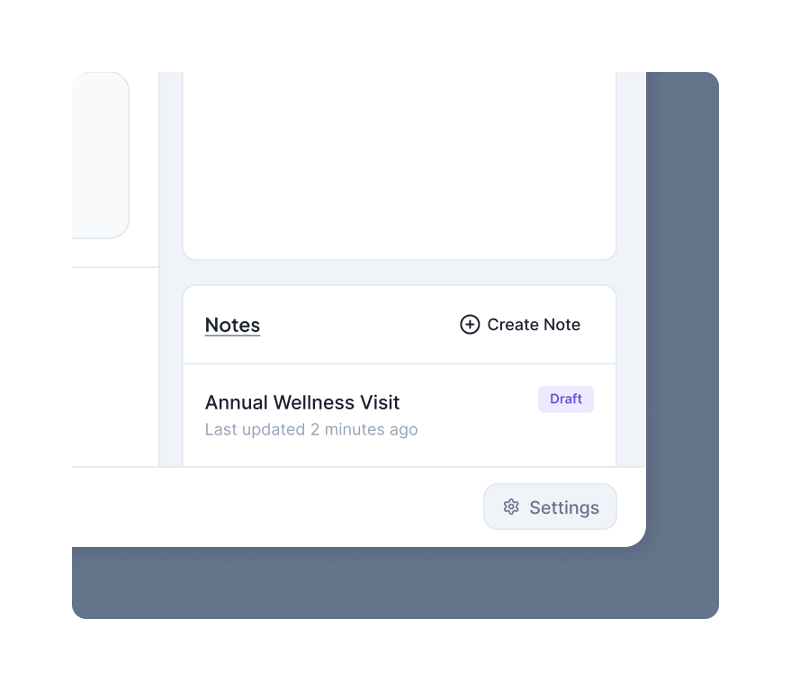
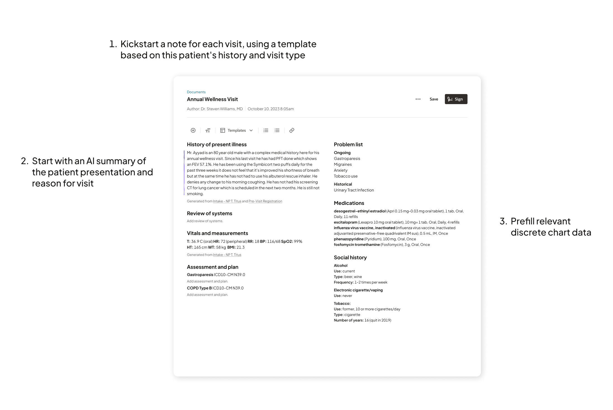
Draft a note with AI using what we know: the patient's history and why they're here.
03Audio analysis
Then, ambient listening during a visit can fill in many of the gaps.
With Oracle Health's clinical assistant, doctors can use their mobile device to record visit audio, and place it unobtrusively face-down on the counter. As they discuss the situation face-to-face with their patient, the assistant extracts information from the audio, contributing to the note and even drafting orders for the physician to confirm later.
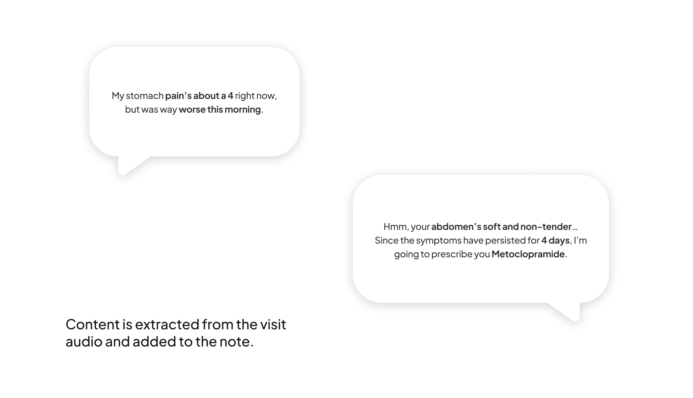
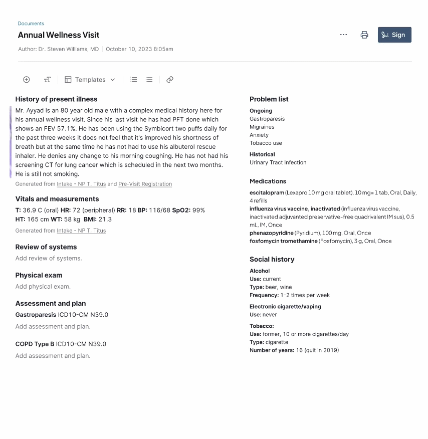
Based on the analyzed audio, relevant information is added to the note in generated text.
04Capturing the internal
But, automatically writing a note won't solve everything.
Notes don't just describe what happened in a visit: they're a narrative of the physician's medical decision-making and the evidence supporting it.
So, every data point that contributes to their assessment, every differential diagnosis they rule out in their heads, and the reasoning behind the plan they prescribe must be laid out for a legal, regulatory, and medical trail.
Physicians navigate through the patient's record, gathering lab results, trends in vitals, details from previous visit notes, and more, and add them to the note. "Copy-pasting" is a major legal no-no in medicine, so we created a shortcut to collect this information with clear attribution and links back to the original source.
User goalAs a primary care physician, I need to collect my thoughts and important information for medical decision-making, so that I can understand and communicate my patient's story.
So, I designed an optimized view for navigating the chart and working on the note side-by-side, with flexible workflows to collect information.
Oracle's conversational Ask Oracle framework facilitates these workflows. Users can use commands (verbal or typed) to add results, or drag and drop any information they need. We intelligently place the content in the note's structure, and let doctors rearrange and add commentary freely.
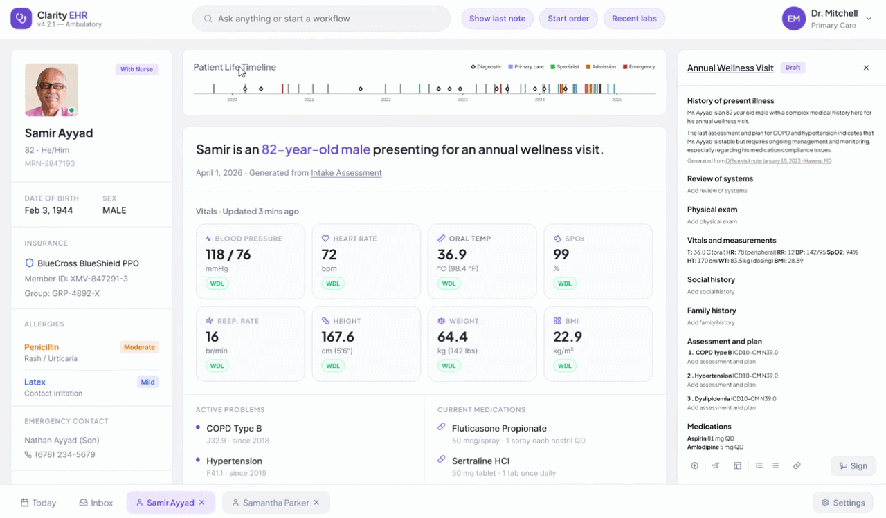
05Raising the quality bar
Another learning from my physician partner: since the transition to electronic health records, physician notes have gotten worse, not better. For repeat visits or long-term treatments, it became common practice to duplicate the old note and write more on top. EHR notes have grown 60% longer and 11% more redundant over the last few years. [2]
I saw an opportunity to improve the quality of note outcomes, not just the experience of making them, by integrating Oracle's biggest differentiator: our AI capabilities.
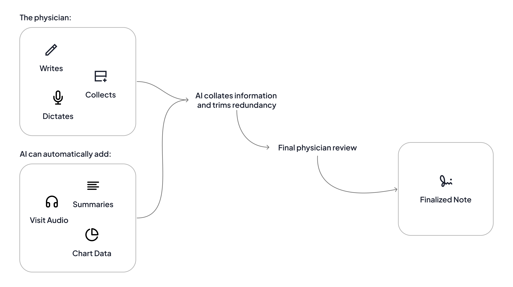
Allowing doctors to securely sign it into record with one click.
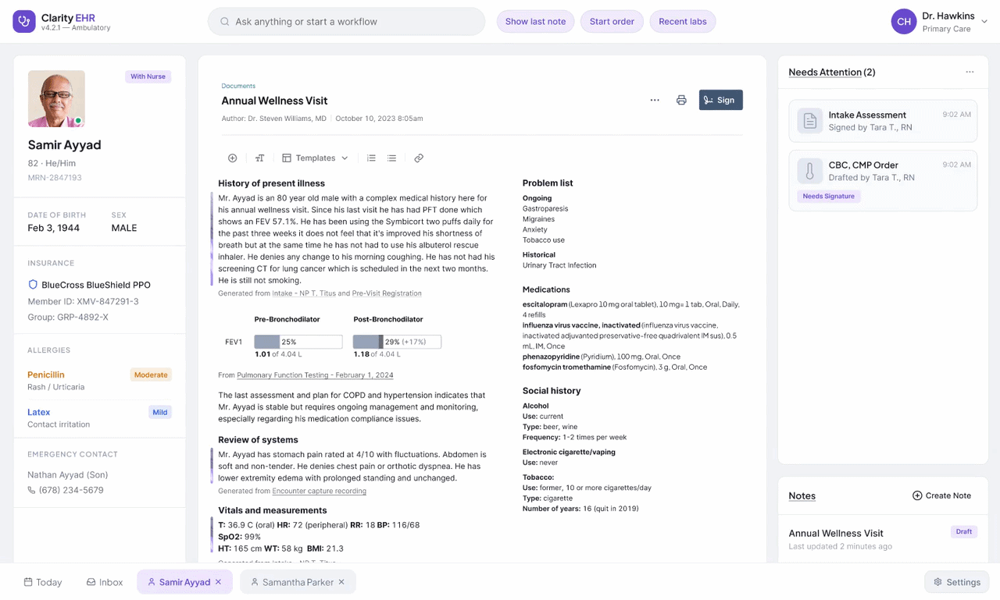
06Translating to nursing
As the experience definition phase of documentation wrapped up, with a roadshow of my final demos across the VP level, I continued to work with developers on incremental implementation.
At the same time, the nursing product team reached out. They were starting to redesign forms-based charting, and asked for me specifically based on my reputation with the other documentation PMs! So I took on a new project, building a great collaboration with our nursing experts and revolutionizing the charting experience.
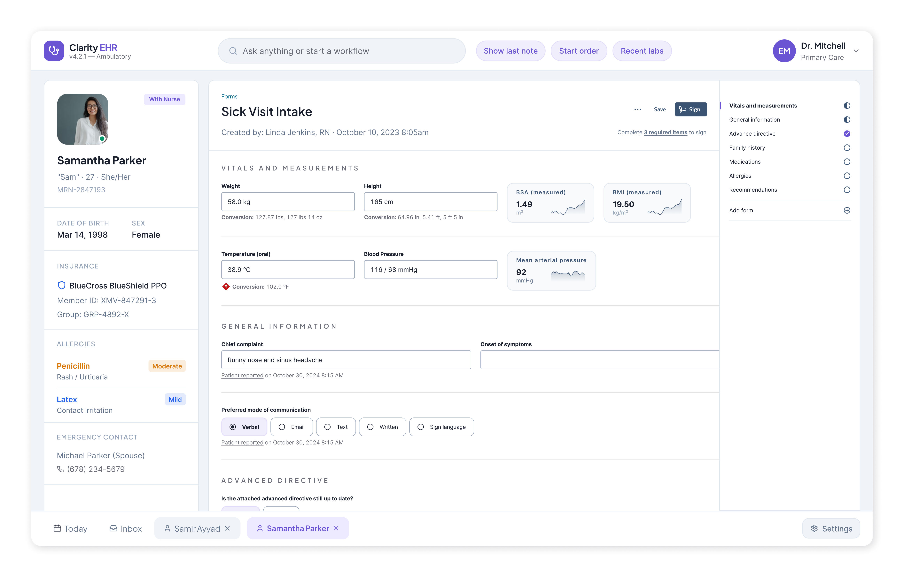
Nurses share the same goal: to record accurate, thorough information without breaking their attention from their patient. But form-based charting involves many fields of discrete data, rather than a written narrative. Just like for notes, extracting information from the visit audio was a huge advantage. Beyond that, I focused on three unique innovations:
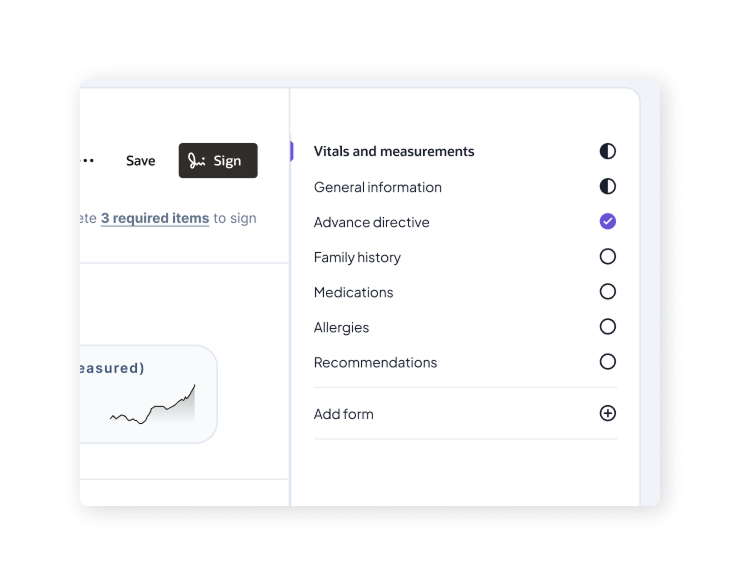
A sequential wizard for queueing up form sets, with quick keyboard macros for entry and navigation.
Fill redundant fields and intelligently carry over the patient's last answer, to remove repetitive entry.
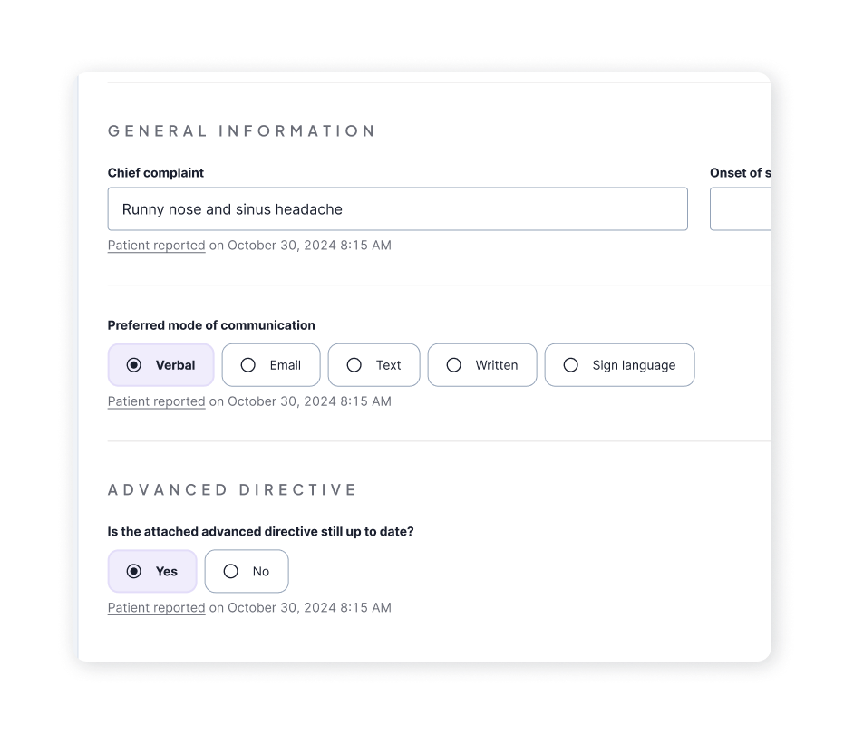
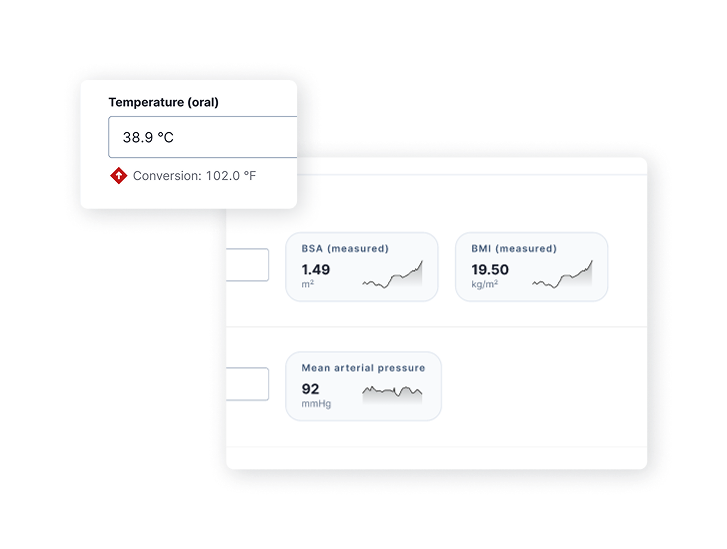
Ease understanding by highlighting trends over time, calculated metrics, and criticality indicators.
07Impact ✨
Since launch, the documentation tools I designed have given clinicians real time back.
Documentation time
−30%
Time in the EHR
−25%
Nursing encounters shorter, per patient
−6½ min
before after launch of Clinical AI Assistant
400,000+
hours saved for US doctors
08Reflection
🚀 Shipped 2 products!
Led 2 workstreams end-to-end across 18 months, from early research and concept exploration to providing dev support for shipped code.
🧠 Drove EHR framework and built reusable patterns
I designed patterns that were picked up and scaled across the EHR: my information-gathering feature made it into messaging and financial administrative products; the side-by-side "review and do" modality applied to acute and specialty workflows; my AI strategy drove the direction of our automatic meds reconciliation workflow; and my charting guided workflow facilitated the medication administration workstream.
It feels amazing to not only see my designs in action, but also see my influence across other products and workstreams!
🤗 Built customer relationships
I helped reignite our relationship with our nursing client base with work that resonated with their experiences and represented their needs. We host a weekly workgroup of clients where we do research and show products and demos for feedback. This group was waning in engagement and excitement for a while, until I presented my initial charting demo! We had the most active engagement our facilitator had seen yet, and sparked lively discussion and critique. It was instrumental in reaching the final design, and so rewarding to chat about the work with nurses directly.